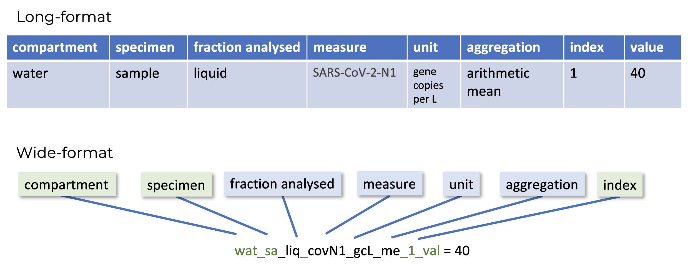
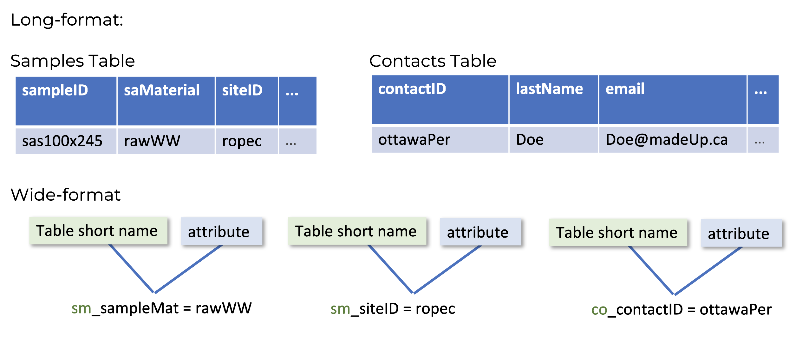
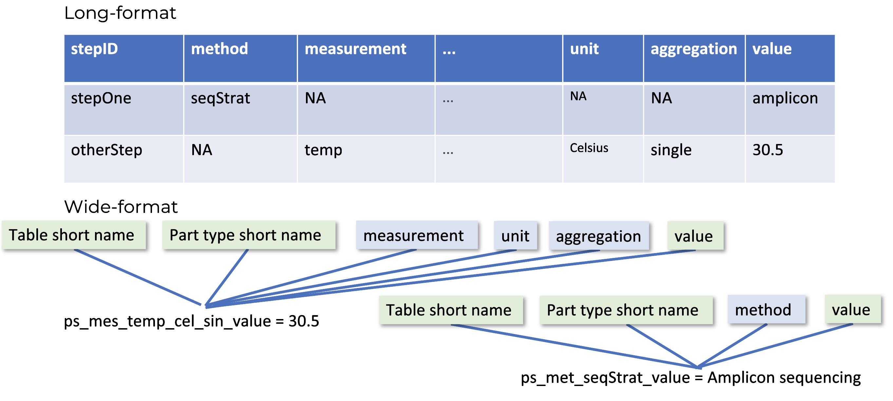
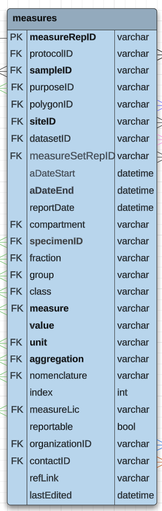

Long-format, wide-format, and wide-names
Dictionary v3.0.0 Documentation v2.1.0
Wide-format and long-format data
Wide- and long-formats are two broad categories for describing how to store or record data. For our purposes, long-format describes a situation with one row for each observation, measure, or data point. Wide-format describes a situation where all observations, measures, or data points of one day are recorded in one row.
For example, below is a long-format table for recording wastewater surveillance data:
| date | measure | value | unit |
|---|---|---|---|
| dec 17 | covid N1 | 32.1 | gc/mL |
| dec 17 | PMMoV | 16.2 | gc/mL |
| dec 17 | pH | 8.2 | unitless |
| dec 20 | covid N1 | 34.6 | gc/mL |
| dec 20 | PMMoV | 19.6 | gc/mL |
| dec 20 | pH | 7.9 | unitless |
The same table but in a wide-format is shown here:
| date | covid N1 (gc/mL) | PMMoV (gc/mL) | pH |
|---|---|---|---|
| dec 17 | 32.1 | 16.2 | 8.2 |
| dec 20 | 34.6 | 19.6 | 7.9 |
With each additional field for recording data points, the wide-format table becomes wider, and the long-format table become longer.
Issues with moving between formats
Data visualizations and analysis workflows commonly use wide-data, and it can be faster to input data in wide-format because there is less repetition. This is because date, sample ID, and other fields are not reentered across rows. Long-format is preferred for storage and aggregation.
The diversity in how wide-data is recorded can impact transparency and interoperability. Particularly, this creates problems when merging data from multiple sources. When data is merged between labs, wide-format tables can have hundreds of columns and missing data in many fields. When transforming data from one format to another, there may be differences in naming conventions. This can lead to mistakes in how the data is mapped, and create errors in the database where information is being stored.
PHES-ODM approach to wide- and long-formats
The PHES-ODM is designed as a series of long-format tables, but aims to provide robust infrastructure to support wide-formats. This support includes managing mapping between long- and wide-formats. To streamline mapping between formats, we have created a standardized approach to generating wide-format column names (or wide-names).

For long-formatted data in the ODM, names are all made using camel case (ex: exampleName). Each long format name is a ‘part’, which are the building blocks of the data model. All wide-format names are snake case (ex: example_name). Each section of the snake case wide name is an individual part that is combined to form the fully-specified wide-name. Using this approach, wide-names can be parsed automatically to move and transform data between formats without introducing errors.
Wide-names
The exact formula used to generate a wide-name in the ODM depends on the kind of data point you are recording. The three kinds of data and metadata for these column names are either attributes, measures, or protocol steps. An attribute column is metadata. These columns provide context about a measure, protocol, or sample. Measure columns report a specific measure, either from a site, sample, or population. Lastly, protocol columns report a specific protocol step or detail for a measure.
Attributes
The wide-name formula for attributes is
tableShortName_attribute
For example, to record the sample material in long-format you would navigate to the samples table and populate the saMaterial column. In wide-format, all data are recorded in a single table. The table and attribute are combined for the wide-name, creating the name
sm_saMaterialfor this attribute. Here sm is the short name for the samples table, and saMaterial is the column name for the sample matrix or material.
Measures
The wide-name formula for a measure or measure-value is
compartment_specimen_fraction_measure_unit_aggregation_index_attributewhere the attribute at the end is always either value, purpose, or qualityFlag.
The ODM long-format specifies a measure column in the measures table, as well as a column for units and one for aggregations. The wide-format collapses all these columns into a single value column.
For example, the wide-name for mean chemical oxygen demand from a wastewater sampling site, recorded in milligrams per litre is
wat_si_NR_cod_mgL_m_NR_valueHere the measure is taken from wastewater/water (wat), it’s a measure of the site (si), the fraction analyzed is not reported (NR), it is a measure of chemical oxygen demand (cod), the units are mg/L (mgL), it’s a mean measure (m), the index is not reported (NR), and lastly this is the value for this measure (value).
Protocol steps
Like measures, protocol step wide-names record the value field. With protocols, the wide-name formula depends on whether the step uses a measure or a method. The formula if using a method is:
tableShortName_partTypeShortName_method_attributeThe formula if using a measure is:
tableShortName_partTypeShortName_measure_unit_aggregation_index_attributewhere in both instances, the table short name always specifies the protocolSteps table (ps), and the partType short name specifies whether this is a measure (mes) or a method (met). The attribute is always value.

For example, the wide-name for the sequencing strategy protocol step (ie. a protocol step using a method) for a wastewater program would be
ps_met_seqStrat_valueThe protocol steps table short name indicates the long-format table (ps), the protocol step uses a method part type (met), it reports the sequencing strategy (seqStrat), and the column records the value (value).
There are various pros and cons to each format, but generally it is ideal for data to be stored and analyzed in a long-format table, while it can be easier to record the data in a wide-format table. Differences in how naming conventions work across formats can lead to mistakes in how the data is mapped, stored and used.
Similarly, the wide-name for a storage temperature (i.e. a protocol step using a measure), would be
ps_mes_temp_cel_sin_NR_valueThe protocol steps table short name indicates the long-format table (ps), the protocol step uses a measure part type (mes), it reports the temperature (temp) in degrees Celsius (cel), it is a single measure (sin, i.e. not aggregated), the index is not reported (NR), and the column records the value (value).
For combined long- and wide-formats
The PHES-ODM is designed as a series of long-format tables, but it is our aim to be as robust and easy to use as possible. To avoid issues of incongruity when moving between wide-format data recording templates and the final long-format data storage tables, we have designed a specific series of formulae to generate wide-format column names (or wide-names) using the part IDs from long-format tables, headers, and values. This may, wide-names can be parsed automatically to reliably move translate data between formats without introducing errors.
Many environmental surveillance and research programs use combined long- and wide-format tables. To account for this, wide-names can contain a “see header” part for each piece of their formulas. These reference the header they point to, promoting data readability for machines and humans.
Let’s return to the first example tables from the start of this page:
| date | compartment | specimen | fraction | measure | value | unit | aggregation |
|---|---|---|---|---|---|---|---|
| dec 17 | water | sample | liquid | covid N1 | 32.1 | gc/mL | single |
| dec 17 | water | sample | liquid | PMMoV | 16.2 | gc/mL | single |
| dec 17 | water | sample | liquid | pH | 8.2 | unitless | single |
| dec 20 | water | sample | liquid | covid N1 | 34.6 | gc/mL | single |
| dec 20 | water | sample | liquid | PMMoV | 19.6 | gc/mL | single |
| dec 20 | water | sample | liquid | pH | 7.9 | unitless | single |
This is long-format data, and I’ve added some additional columns to record the fraction analyzed, the compartment, the specimen, etc. Now if we were to move to a wide-format, we could use the formulae described above and generate this kind of table:
| date | wat_sa_ liq_covN1_ gcMl_sin_ NR | wat_sa_ liq_pmmov_ gcMl_sin_ NR | wat_sa_ liq_pH_ unitless_ sin_NR |
|---|---|---|---|
| dec 17 | 32.1 | 16.2 | 8.2 |
| dec 20 | 34.6 | 19.6 | 7.9 |
Now let’s look at an example of a mixed long- and wide-format table. Something like this might arise where the initial table was developed for ODM long-format, but ultimately it was decided that the program wanted to record multiple measures in a single row. For this, we have what looks like standard ODM long-format for the first eight columns, but then the wide-format for the last two.
| date | compartment | specimen | fraction | measure | value | unit | aggregation | PMMoV (gc/ML) | pH (unitless) |
|---|---|---|---|---|---|---|---|---|---|
| dec 17 | water | sample | liquid | covid N1 | 32.1 | gc/mL | single | 16.2 | 8.2 |
| dec 20 | water | sample | liquid | covid N1 | 34.6 | gc/mL | single | 19.6 | 7.9 |
In this example, you can see that compartment, specimen, and fraction analyzed are applied also to the PMMoV and pH columns, as well as the measure column. In these instances a measure of PMMoV where the fraction analyzed in specified in a different column would use the wide-name:
wat_sa_hFr_covN1_gcml_m_valueHere the hFr indicates by its placement and the letters used that the fraction analyzed is specified elsewhere.
Another example is for data is reported in long-format for one measure, but wide-format for all others. In this situation the fraction analyzed, the measure, the units, and the aggregation are all specified in other columns. Rather than simply reporting value as you would an attribute, you would use the wide name:
wat_sa_hFr_hMr_hUn_hAg_NR_valueto better link all the metadata pieces in other columns to this specific measurement. So to recreate the above mixed-format table with the ODM coded wide-names, we would get:
| mr_ report Date | mr_ compartment | mr_ specimen | mr_ fraction | mr_ measure | hCo_hSp_ hFr_hMr_ hUn_hAg_ NR_value | mr_ unit | mr_ aggregation | hCo_hSp_ hFr_pmmov _gcMl_sin_ NR_value | hCo_hSp_ hFr_pH_ unitless_ sin_NR_ value |
|---|---|---|---|---|---|---|---|---|---|
| dec 17 | water | sample | liquid | covid N1 | 32.1 | gc/mL | single | 16.2 | 8.2 |
| dec 20 | water | sample | liquid | covid N1 | 34.6 | gc/mL | single | 19.6 | 7.9 |
Wide-name exceptions
There is a diversity of wide-templates across labs. Sometimes these headers can combine two ODM attributes, or two or more methods or measures. This complicates mapping to the ODM, but unique wide-names can be generated for these as well.
Attribute naming exceptions
For combined attributes, the regular attribute formula (tableShortName_attribute) becomes
tableShortName_n_aggregation_attribute1_..._attributeNWhere n is an integer indicating the number of attributes being combined together, the aggregation is a boolean aggregation of either OR or AND to indicate whether the column records all of the attribute, or one or another. Finally, the attributes are listed in snake case. This wide-names is still machine readable.
For example, a wide-column name where sample collection period and collection number are reported together would be:
sm_2_AND_collPer_collNumFor _AND_ style wide-names, the default separator must be a period (.). So for the is example, where we are recording the sample collection period and number together, a value of a 24-hour period with 12 collections would be 24.12.
Measure and method naming exceptions
For combined measures or methods, the ..._n_... approach is also used.
For measures, the formula is: compartment_specimen_fraction_n_aggregation(bool)_measure1_measure2_..._measureN_unit_aggregation_index_attribute, where all measures must share the same units and aggregation. For example, a column to measure the presence of “other” mutations, alleles, or variants uses the wide-name wat_sa_liq_3_OR_otherM_otherA_otherV_gcMl_m_value.
For Methods the use case is slightly more constrained. Protocol steps are rarely combined into a single field. Protocol steps using one or more measures which report a single value would be highly unlikely to exist. Protocol steps using methods combinations only work and make sense because the inputs are categorical and defined. The suggested structure for a protocol step using only methods (and no measures) would follow the formula tableShortName_partTypeShortName_n_aggregation_method1_..._methodN_attribute.
For example a column where one specifies the protocol step for either pcr or sequencing strategy in a wastewater program would be called ps_met_wat_sa_liq_2_OR_pcrmeth_seqStrat_value.
In instances of OR wide names, the values sets for the different measures or methods are distinct, and the sets information for the input can be used to determine which method or measure is being reported.
Tutorials
Here’s an example to walk you through moving from long-format to wide-format. Try to go through slowly and see if you can determine the correct answer before you read it.
Building a wide-format ODM headers
We’re going to transform an example long-format measure table to wide-format. In figure 5 we see the list of all the possible headers in the measures table. Not all of the headers are mandatory, so you may choose not to use them all. Our tutorial here is just to write out what the wide name would be for each of these headers.

Everything in this table is an attribute, except for (eventually) the value field. We know that attributes use the structure:
tableShortName_attributeSo with that in mind, see if you can type up or write out what you think the ODM wide name would be for all of these headers - skipping the value header. Keep in mind that for headers that are foreign keys (noted FK in figure 5), that the table short name used should be the table in which those attributes are a primary key. You may want to consult the ERD and the parts list to double check which tables host the primary keys and what the short names are for those tables.
Once you have tried coming up with the wide names, check your answers against the equivalent wide names listed below:
- mr_measureRepID
- pr_protocolID
- sm_sampleID
- pa_purpose
- po_polygonID
- st_siteID
- ds_datasetID
- ms_meaureSetRepID
- mr_aDateStart
- mr_aDateEnd
- mr_reportDate
- pa_specimen
- pa_fraction
- pa_group
- pa_class
- pa_measure
- pa_unit
- pa_aggregation
- pa_nomenclature
- mr_index
- mr_mesureLic
- mr_reportable
- mr_organizationID
- mr_contactID
- mr_refLink
- mr_lastEdited
- mr_notes
Building a wide-format ODM table
Now lets try an example using a shortened version of the measures table, populated with some fake data.
| date | compartment | specimen | fraction | measure | value | unit | aggregation | index |
|---|---|---|---|---|---|---|---|---|
| dec 17 | water | sample | liquid | Mpox | 32.1 | gc/mL | single | 1 |
| dec 17 | water | sample | mixed | PMMoV | 16.2 | gc/mL | single | 2 |
| dec 17 | air | sample | NA | s2083i omicron-variant gene target | 8.2 | gc | single | NA |
| dec 20 | water | site | liquid | Flow rate | 34.6 | ML/day | arith. mean | NA |
| dec 20 | surface | sample | NA | Influenza virus A1 | 19.6 | gc/mL | single | NA |
| dec 20 | water | sample | liquid | pH | 7.9 | unitless | single | 2 |
Everything in this mini-table is part of a measurement-value wide-name, except for date. We know that measurements use the structure:
compartment_specimen_fraction_measure_unit_aggregation_index_attributeSo with that in mind, see if you can type up or write out what you think the ODM wide name would be for all of these headers - including date as an attribute. You may want to consult the ERD and the parts list to double check which tables host the primary keys and what the short names are for those tables.
The answer key for the wide version of this mini-table is here:
| mr_ reportDate | wat_sa_ liq_mpox _gcml_sin_ 1_value | wat_sa_ mix_pmmov _gcml_sin_ 2_value | air_sa_ NA_s2083i_ gc_sin_NA _value | wat_si_ liq_floRate _mld_me_ NA_value | surf_sa_ NA_fluA1_ gcml_sin_ NA_value | wat_sa_ liq_pH_ unitless_ sin_2_ value |
|---|---|---|---|---|---|---|
| dec 17 | 32.1 | 16.2 | 8.2 | NA | NA | NA |
| dec 20 | NA | NA | NA | 34.6 | 19.6 | 7.9 |
How-To Guides
The wideNames table has been added for the v2.3 release, and includes the wide-names that are in current use of which we are aware. The table has also been set up with drop down menus, similar to the data input templates. This way, users can fill out the information for a given header, and have the ODM-formatted wide name generated automatically.
Wide-name Templates
Please check out the wide names table and tamplate here [LINK TBA], and don’t forget to let us know what wide names you are using, so that we can add them to the list.